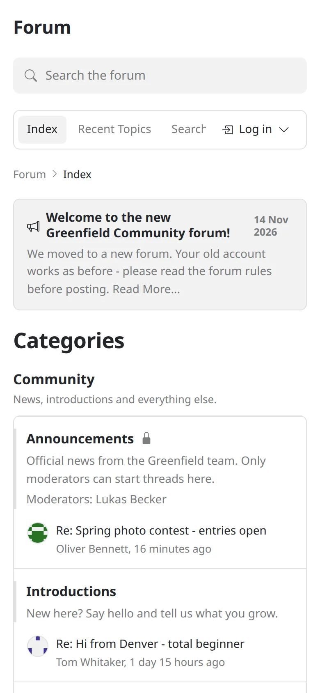
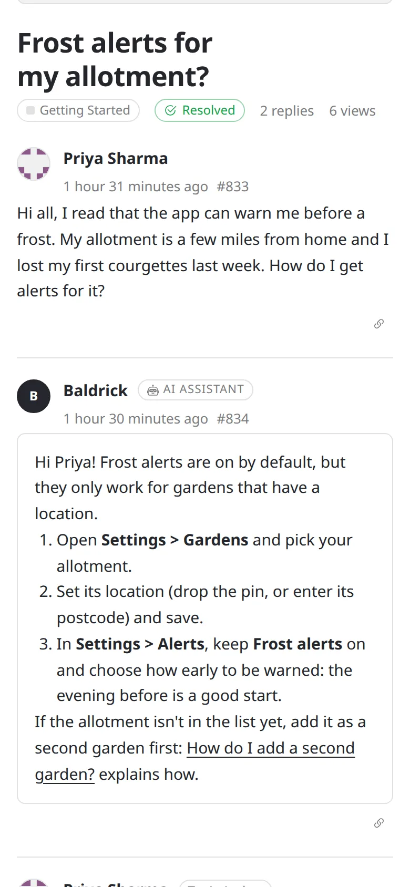
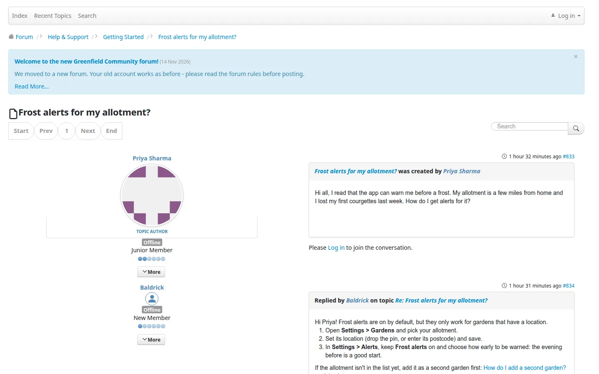

Priya Sharma
My allotment is a few miles from home and I lost my first courgettes to frost last week. How do I get alerts for it?
Meela continues Kunena 5.2, the last Kunena for Joomla 3: a new template, an AI that answers the questions nobody did, every database Joomla 3.x UTD supports and about 90 security fixes. Free and open source.
My allotment is a few miles from home and I lost my first courgettes to frost last week. How do I get alerts for it?
Hi Priya! Frost alerts only work for gardens with a location:
That was it: the allotment had no location. Thank you!
Eighteen years of Kunena are in Meela: everything a busy community uses every day, now running on current PHP and every database, with nothing to install separately.
Nested categories, each with its own permissions, moderators, icons and rules.
BBCode with a toolbar and preview, quotes, mentions, edit history, sticky and locked threads.
Single or multiple choice, with an end date and results.
Images (WebP and AVIF too), documents and media, with inline images and a lightbox.
Avatars, ranks, karma, thank-yous, signatures and the member list.
Follow categories or threads, and get an e-mail for new replies.
Approve, move, merge, split and delete; reports, bans, a moderation queue and logs.
Forum search, recent and unread topics, and Joomla's own search.
Who's online, top posters and the forum's numbers.
For the whole forum, a category or a thread.
For news the whole forum should see.
Emoticons, topic icons and labels such as "Resolved".
Access levels or user groups decide who reads, posts and moderates.
Latest posts, login, search and statistics modules, article discussions and Joomla search.
The translations Kunena's community made over the years.
Profiles, avatars and login from Community Builder, if you use it.
A template made for Meela: monochrome and quiet, so your community and your site template stay in front.
Blackadder is Meela's default template. Lists read like a modern discussion board, threads have one reply box, and every page was rebuilt: posting, profiles, search and moderation.
Blackadder has no colours of its own: it mixes them from the site template, so it fits Hammond, Finch and Rookwood (Joomla 3.x UTD's templates) or your own, and follows their dark mode.


Unanswered questions are what makes members leave. Baldrick answers them, from what your forum already knows, and keeps out of the way of your staff.
Works with Anthropic's API or any OpenAI-compatible one (OpenAI, Qwen, self-hosted models). A dry run, cost tracking, e-mail reports and automatic retries are built in. The posts it handles go to the provider you choose: mention it in your privacy policy.
The two things a public forum needs most: keeping spam out and being found by the people it was made for.
Kunena 5.2 checked only reCAPTCHA-style plugins and silently skipped the rest, so bots posted wherever they liked. Meela uses the CAPTCHA set as "Default Captcha" in Joomla's Global Configuration, and refuses posts when one is required but none is configured.
Every thread is described as Google's DiscussionForumPosting, with its replies, authors and images, and every profile as a ProfilePage. Shared links get proper Open Graph and X cards.
Meela's administrator works with Joomla 3.x UTD's new Prothero template, light or dark, and gathers the routine work in one place.
Meela wouldn't exist without Kunena. Since 2008, the Kunena Team and hundreds of contributors, translators and testers have built and maintained one of the most complete forums for Joomla, for free, and kept it going through several Joomla generations. Everything in Meela stands on their work: the forum itself, its permissions, its moderation tools, its 54 languages.
Meela continues the Joomla 3 line they left behind in 2022, so that the many sites still on Joomla 3 can keep their community safe and current. If your site runs Joomla 4, 5 or 6, use Kunena, and thank its developers.
What site owners and members actually see. Kunena 6 and 7 are actively developed for newer Joomla versions; Meela is the way forward on Joomla 3.
| What you get | Meela 5.5Joomla 3.x | Kunena 5.2the last for Joomla 3, 2022 | Kunena 6 and 7for Joomla 4, 5 and 6; 7.1.1 is current |
|---|---|---|---|
| Joomla | Joomla 3.9 to 3.18, made for Joomla 3.x UTD | Joomla 3 | Joomla 4 and 5 (6.x); Joomla 5.4 and 6 (7.x) |
| PHP | 7.1 to 8.5, no deprecation warnings | PHP 7; warnings on recent PHP 8 versions | 8.2 or newer (7.x) |
| Databases | MySQL, MariaDB, PostgreSQL, SQLite | MySQL, MariaDB | MySQL 8.0.13+, MariaDB 10.4+ (7.x) |
| Security | About 90 vulnerabilities fixed, including the CAPTCHA bypass bots used | No more releases since 2022 | Maintained |
| CAPTCHA | Any Joomla CAPTCHA plugin set as Default (reCAPTCHA, hCaptcha, Turnstile, IconCaptcha, Akismet...); refuses posts if none is set | reCAPTCHA-style plugins only; others were skipped, so bots posted freely | Reworked for Joomla 5 and 6 (7.x) |
| Spam defences | Profiles show guests nothing to advertise; username and name rules; Baldrick AI unpublishes spam | Bans and moderation | StopForumSpam check on registration and login (7.x) |
| Default template | Blackadder: no Bootstrap, takes the site template's fonts, colours and dark mode; one CSS and one JS file | Crypsis (Bootstrap 2, jQuery) | Bootstrap 5 based (7.x), with jQuery and Font Awesome |
| AI first responder | Baldrick AI: answers unanswered questions with Anthropic or OpenAI-compatible models | No | No |
| Search engines | Google's DiscussionForumPosting and ProfilePage data, Open Graph and X cards, XML sitemaps | Basic, with errors Google rejects | Open Graph and microdata |
| Threads | Resolved threads; automatic locking after days without replies | Manual locking | Manual locking |
| Maintenance | One Maintenance page, Empty Trash, Sample Data, utf8mb4 conversion, fast recount | Tools pages | Tools; a scheduled task empties the trash (7.x) |
| Command line and AI assistants | kunena:* commands on Joomla 3.x UTD's command line, also offered to AI assistants (MCP) | No | Not documented |
| Integrations | Community Builder (others removed) | JomSocial, EasySocial, EasyProfile, AltaUserPoints, EasyBlog, UddeIM, CB | JomSocial, EasySocial, EasyProfile, AltaUserPoints, EasyBlog, UddeIM, CB |
| Translations | 54 languages, new strings in English | Transifex, frozen | Crowdin, updated by the community |
| Updates | Joomla's updater, from GitHub | Ended | Joomla's updater |

Every release is described in detail in the changelog.
The new name everywhere users see it. Guests and search engines see only a member's avatar, name, role and posts; usernames and names limited to common characters; profiles in the XML sitemaps; one Maintenance page with a Run button per job; emoji on old MySQL forums (utf8mb4); a tidier dashboard with Meela's logo.
A command for cron writes static sitemaps of the categories and of the threads by year, with the site's own SEF URLs and only what guests can see.
One package for everything, PHP 7.1 to 8.5, PostgreSQL and SQLite, about 90 security fixes, CAPTCHA from Joomla's settings, Blackadder, Baldrick AI, structured data, resolved threads and automatic locking, faster tools and a command line.
Where Meela is going next. Plans, not promises: ideas and help are welcome on GitHub.
Rewrite the remaining jQuery code (Crypsis, the administrator, the editors) in plain JavaScript. The plan is already written.
Keep improving Blackadder: faster posting, richer notifications, polish for phones and screen readers.
A new template with its own character, next to Blackadder.
Move to Meela from phpBB, SMF, MyBB, vBulletin, XenForo, Discourse and Joomla forum extensions such as EasyDiscuss.
Namespaced, typed and documented code, from the controllers to the templates, without breaking integrations.
Checks at registration (such as StopForumSpam), and Baldrick AI watching new members' first posts.
Refresh the 54 languages, and bring the new strings to them.
Run maintenance jobs and sitemaps on a schedule from the administrator, not only from cron.
Summaries of long threads, suggested answers for moderators, and help for new members.
Meela installs like any Joomla extension, and upgrades Kunena 5.2 sites in place: your categories, posts, attachments and settings stay.
Get the Meela 5.5.0 ZIP, or Code > Download ZIP on GitHub.
In Joomla's administrator, go to Extensions > Install and upload the ZIP as it is. Upgrading from Kunena 5.2 or Kunena Fork works the same way.
Meela's wizard creates or upgrades the forum's tables. Later updates arrive through System > Update > Extensions.
Requirements: Joomla 3.9 to 3.18 (Joomla 3.x UTD recommended), PHP 7.1 or newer (7.4+ recommended), MySQL 5.5.3+ or MariaDB, PostgreSQL 9.5+ or SQLite 3.37+. Take a backup before upgrading, as for any update.